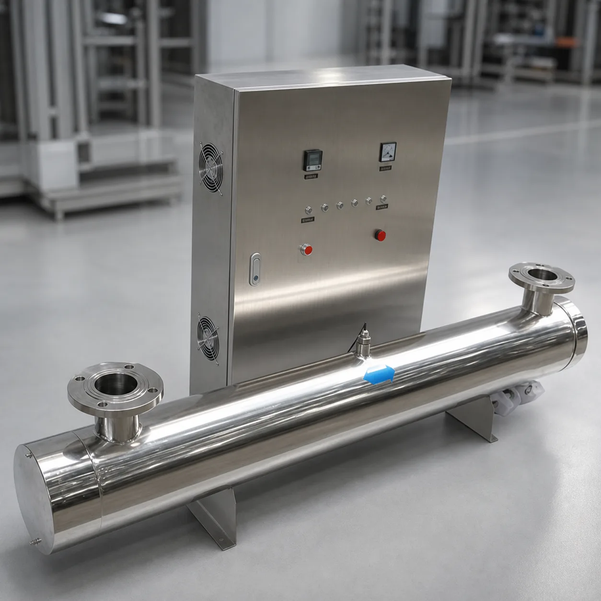

PROCESS POSITION
The 185 nm wavelength generates hydroxyl radicals that oxidize organic compounds. The 254 nm wavelength provides microbial inactivation. Together they reduce organic load and protect high-purity water quality.
185 nm + 254 nm Ultrapure Water UV
Dual-wavelength 185 nm + 254 nm UV for TOC degradation and microbial control in ultrapure-water loops. The system is typically installed after EDI or a polishing mixed bed, with selected configurations targeting TOC ≤0.5 μg/L and flow of 0.5–20 m³/h.
Discuss Your Requirement →
KONCHE TOC UV systems: the 185 nm polishing stage that photo-oxidizes organics into CO₂ and water — the end-of-train guarantee of ≤0.5 μg/L TOC at 0.5–20 m³/h.
| What matters to you | How KONCHE delivers |
|---|---|
| One lamp, two duties | 185 nm TOC destruction plus 254 nm sterilization in one chamber |
| Thorough degradation | ≤0.5 μg/L output from ≤50 μg/L feed |
| Retrofit-friendly | Compact in-line 316L body fits new and existing systems |
| Proven sizing | Selected against loop TOC, temperature and contact time |
Related: UV Water Sterilizer systems · Application solutions
Dual-wavelength 185 nm + 254 nm UV for TOC degradation and microbial control in ultrapure-water loops. The system is typically installed after EDI or a polishing mixed bed, with selected configurations targeting TOC ≤0.5 μg/L and flow of 0.5–20 m³/h.
KONCHE TOC systems use 185+254 nm dual-wavelength lamps in 316L electropolished chambers with synthetic-quartz sleeves. Capacities span 0.5–20 m³/h with lamp life 8,000–10,000 h; the unit installs after EDI, before or after the polishing mixed bed. Typical projects: semiconductor wafer rinsing, PCB/FPC cleaning, pharmaceutical purified water, optoelectronic panels and laboratory ICP-MS/HPLC water.
The 185 nm wavelength generates hydroxyl radicals that oxidize organic compounds. The 254 nm wavelength provides microbial inactivation. Together they reduce organic load and protect high-purity water quality.
| Advantage | Customer benefit |
|---|---|
| Dual-wavelength design | TOC degradation and sterilization in one unit. |
| Thorough degradation | Outlet TOC ≤0.5 μg/L with feed water up to 50 μg/L. |
| Imported lamps | Synthetic-quartz lamps with 8,000–10,000 h life and high 185 nm transmission. |
| Compact in-line body | 316L chamber retrofittable to new and existing systems. |
| Deep application experience | Nearly 30 years of ultrapure-water train engineering for accurate selection. |
| Parameter | Value |
|---|---|
| Wavelength | 185 nm |
| Flow | 0.5–20 m³/h |
| TOC target | ≤0.5 μg/L in selected configurations |
| TOC removal | Typically 50–60 , dependent on feed water % |
| Pressure | ≤0.6 MPa |
| Chamber | 316L stainless steel |
| Lamp life | 8,000–10,000 hours |
| Power range | Approximately 40–960 W |
| Model | Capacity | Lamp power | TOC removal |
|---|---|---|---|
| KC-TOC-05 | 0.5 m³/h | 40 W | ≥50% |
| KC-TOC-1 | 1 m³/h | 80 W | ≥50% |
| KC-TOC-2 | 2 m³/h | 120 W | ≥55% |
| KC-TOC-5 | 5 m³/h | 240 W | ≥55% |
| KC-TOC-10 | 10 m³/h | 480 W | ≥60% |
| KC-TOC-20 | 20 m³/h | 960 W | ≥60% |
Note: removal depends on feed TOC, water temperature and contact time.
| Industry | Water point | System value |
|---|---|---|
| Semiconductors | Wafer rinsing, end-of-loop | TOC ≤1 μg/L (EP grade) at the point of use. |
| PCB / FPC | Final rinsing water | TOC ≤5 μg/L for cleaning quality. |
| Pharmaceuticals | Purified water / WFI loops | Meets pharmacopoeia TOC with margin. |
| Optoelectronics | TFT-LCD / OLED panel cleaning | TOC ≤5 μg/L for panel yield. |
| Laboratories | ICP-MS / HPLC feed | Type I water with TOC ≤10 μg/L. |
| Item | Cycle | Maintenance |
|---|---|---|
| UV lamp | 8,000–10,000 operating hours | Replace according to operating hours and UV-intensity trend. |
| Quartz sleeve | Every 3 months | Inspect and clean to maintain transmission. |
| Quartz replacement | Every 2–3 years | Replace when transmission or surface condition cannot be restored. |
| TOC / intensity sensor | Continuous | Verify reading and alarm response. |
| Seals | Annually | Inspect and replace aged seals during preventive service. |
185 nm supports organic oxidation while 254 nm supports microbial inactivation.
It is normally installed after EDI or a polishing mixed bed, close to the ultrapure-water storage or distribution loop.
Selected configurations target ≤0.5 μg/L. Actual performance depends on feed-water TOC, flow, UV transmittance, lamp condition and system design.
Track operating hours and UV intensity, clean quartz regularly and replace the lamp when intensity or operating hours reach the maintenance limit.
Since 1997, Konche has engineered ultrapure-water polishing trains — TOC-UV stages sized against loop TOC load, lamp transmission and contact time.
Each system is designed around the water analysis, industry standard, site condition, capacity and final use.
Component selection, factory testing, water-quality verification and process control are managed as one complete system.
KONCHE supports proposal alignment, technical documentation, consumables supply, maintenance guidance and remote operational clarification.
Send your water analysis, target capacity and application. Konche will help select and configure the suitable system.
Get Expert Support →